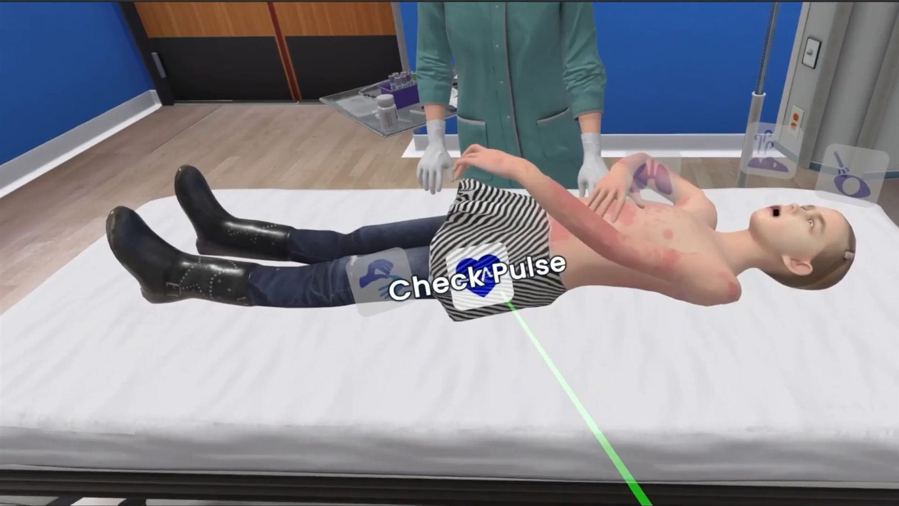
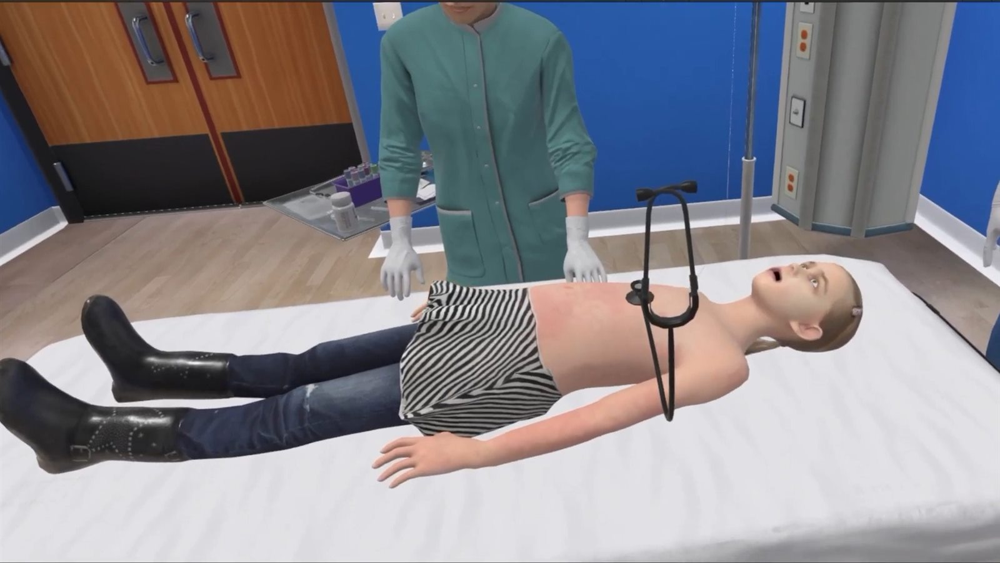
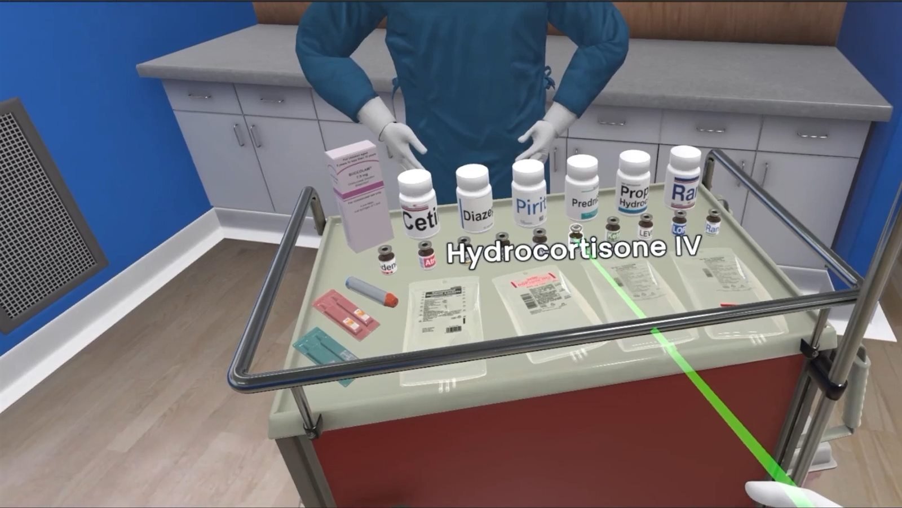
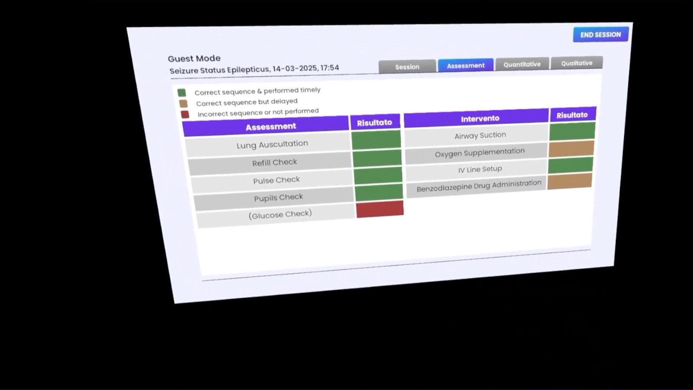

- Built the VR interaction systems: what can be picked up, what it does in the hand, and how the patient responds.
- Built clinical scenarios across varied situations and patient age groups.
- Localised the procedure, not the string table. Locale changes which medications are on the trolley, how the scenario plays out and how it is scored, because hospitals in different regions follow different protocols.
- Automated the localisation pipeline by wiring the localisation dictionary to Google Sheets. Translators and clinical reviewers work in the sheet and builds pull from it, so export and re-import stopped existing. Cut cost and turnaround on every release after.
- Built the analytics layer. Every trainee action is written as an event into SQLite as the session runs, and scoring is a set of queries over that log rather than flags maintained by gameplay code. A disputed score can be shown as events and a query.




Scenario scripter
I designed the framework instructors use to script a scenario: every beat is a ScriptableObject instead of scene-specific code.
- A scenario is a sequence of ScriptableObject beats: show a widget, trigger an NPC to walk in on root motion to a marked location, play a voice line, then update the current objective. Each beat is a self-contained asset, not a line in a script.
- The active objective SO drives a listener that watches player actions against the conditions it defines as correct, and resolves the scene, a side effect, or a failure state if the right actions do not happen before time runs out.
- Because every beat and every objective is the same kind of asset, a new scenario is built by composing existing units rather than writing new code for it.